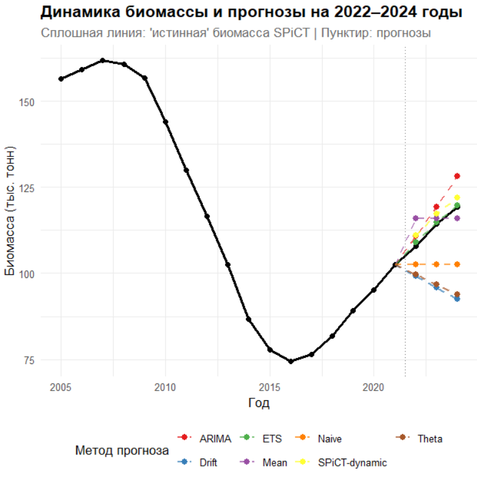
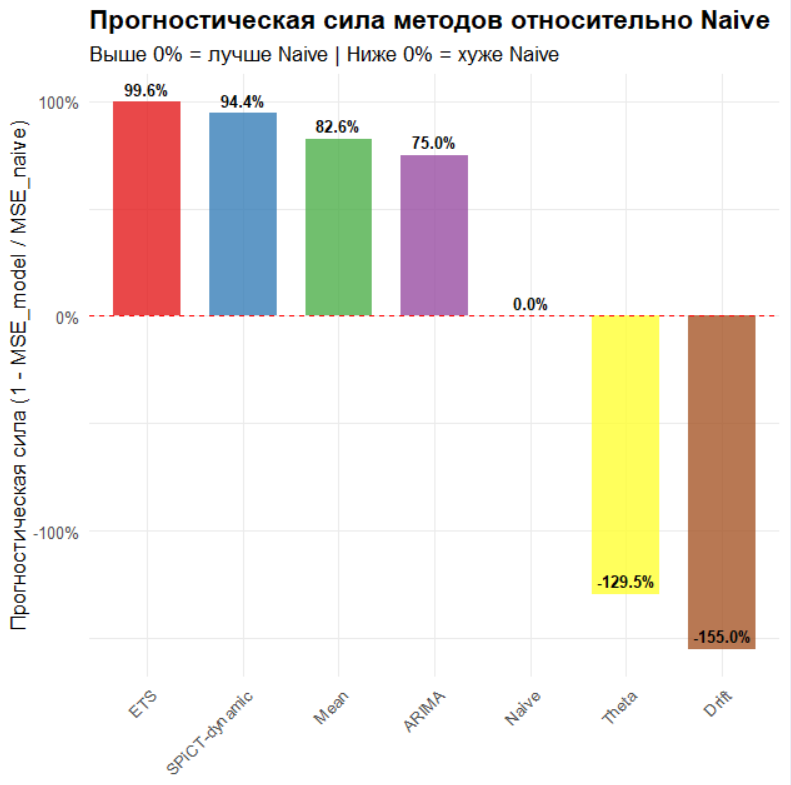
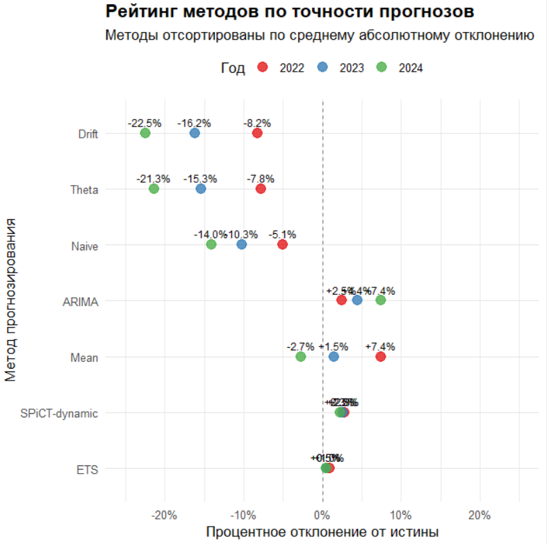

31 IV. SPiCT: прогностическая сила
31.1 Введение
Есть искушение поверить, что правильно выбранная «умная» модель сделает будущее послушным. Временной ряд биомассы выглядит аккуратно, графики «дышат» логикой, и кажется, что ещё шаг — и мы научимся поворачивать ручку управления запасом. Опасность здесь — та же иллюзия контроля: среда нестационарна, режимы меняются скачкообразно, часть «сигналов» — просто шум, а короткие ряды неизбежно подталкивают к переобучению. Поэтому задача прогноза — не найти единственного героя, а дисциплинированно сопоставить конкурирующие объяснения, избегая утечки информации из будущего в прошлое, и честно проверять, где простые правила бьют сложные, а где механистическая логика помогает там, где «чистая статистика» сдаётся.
В этом практикуме мы намеренно ставим рядом сразу несколько семей моделей для прогноза биомассы: от наивной персистентности до ARIMA, от экспоненциального сглаживания до Theta, и отдельной строкой — механистический сценарий на основе продукционной модели SPiCT. Истина для сравнения — это «лучший на сегодня» ряд биомассы из полной подгонки SPiCT за 2005–2024. Прогнозируем только вперёд (2022–2024), оценку качества даём на внешнем хронологическом тесте, а меру прогностической силы считаем относительно наивного базиса. Результат — не попытка «угадать число», а трезвое сравнение стратегий на коротком горизонте, где важны не только точность и интервалы, но и интерпретируемость.
Что именно мы сравниваем и зачем
Истина и тест: «истиной» считаем годовую биомассу из SPiCT, обученной на 2005–2024; для валидации берём внешний период 2022–2024 (мир будущего, не видимый обучению статистических моделей).
Модели-прогнозисты: Naive, Drift, Mean, Theta, ETS, ARIMA — стандартные, репрезентативные и взаимодополняющие; плюс отдельный механистический сценарий SPiCT-dynamic.
Оценка качества: MSE/RMSE/MAE по годам 2022–2024 и прогностическая сила относительно наивного базиса, Skill = 1 − MSEmodel/MSEnaive (положительно — лучше наивного). Дополнительно — таблица процентных отклонений «прогноз − истина» по каждому году и методу.
31.1.1 Коротко о каждом методе
Наивный (персистентность)
Идея: «завтра как сегодня» (последнее наблюдение переносится вперёд).
Сильные стороны: удивительно силён при инерции процесса и коротких горизонтах; служит честным и обязательным базисом.
Слабости: не ловит переломы и тренды, «залипает» в старом режиме.
Дрейф (случайное блуждание с дрейфом)
Идея: растущая/падающая средняя траектория (ARIMA(0,1,0)+drift): «вчерашний уровень + средний шаг».
Сильные стороны: улавливает приблизительный тренд без переобучения.
Слабости: легко «перетягивает» тренд через режимный сдвиг; с малым набором лет дрейф оценён шумно.
Среднее (Mean)
Идея: прогноз — это долгосрочное среднее уровня.
Сильные стороны: «жёсткое стягивание» к центру; стабилен при стационарной волатильности.
Слабости: игнорирует тренды и инерцию; на коротком горизонте часто проигрывает наивному.
Theta
Идея: разложение ряда на «тета-линии» с последующей реконструкцией; исторически силён на бенчмарках (M-3 и др.).
Сильные стороны: часто выигрывает на коротком горизонте при умеренной трендовости и шуме.
Слабости: чувствителен к резким режимным сдвигам; параметризация не «видит» причинности.
ETS (экспоненциальное сглаживание в виде state-space)
Идея: компонентная модель уровня/тренда (возможен демпфированный тренд); автоматический выбор спецификации.
Сильные стороны: даёт аккуратные интервалы, робастно ведёт себя при коротких рядах, мягко ловит тренд.
Слабости: без сезонности — ограниченная форма динамики; при длинной памяти/разрывах может уступать ARIMA.
ARIMA (Box–Jenkins)
Идея: явное моделирование автокорреляции после доведения до стационарности (дифференцирование).
Сильные стороны: улавливает линейную динамику и ошибочную структуру; при корректной идентификации даёт конкурентные прогнозы и вменяемые интервалы.
Слабости: короткие ряды затрудняют выбор порядков; режимные сдвиги, нелинейности и структурные разрывы ломают предпосылки.
SPiCT‑dynamic (механистический сценарий)
Идея: берём параметры r и K из SPiCT, обученного до 2021, и прокручиваем дискретную «логистику» вперёд на 2022–2024 с вычетом фактических уловов (hindcast под реализованным промыслом).
Сильные стороны: биологическая интерпретируемость и причинная связка «смертность/вылов → биомасса»; корректная реакция на изменение нагрузки.
Слабости: в учебной версии — детерминированная траектория без интервалов и без «шумов среды»; чувствителен к оценкам r, K и B(последний год обучения).
Почему сравнивать «вширь» — благо
Разные модели отражают разные гипотезы о природе сигнала: инерция и «стягивание к среднему» (Naive/Mean), сглаженный тренд (ETS/Theta), линейная динамика ошибок (ARIMA), механистическая реакция запаса на вылов (SPiCT‑dynamic).
Если «простые» бьют «сложные» на внешнем тесте — это не провал, а очень полезная диагностика: значит, в данных не хватает устойчивой структуры для выигрыша сложностью.
Если механистический сценарий выигрывает у чисто статистических — это сигнал, что причинная «вылов → динамика» действительно доминирует.
Как читаем результаты
Прогностическая сила (Skill) > 0 — метод лучше наивного; < 0 — хуже, значит, усложнение не окупилось.
Интервалы прогноза у ETS/ARIMA/Theta — часть ответа, а не украшение; «узкие и смелые» опаснее «умеренно широких и честных».
Таблица процентных отклонений по годам помогает увидеть систематические смещения (пере- или недопредсказание) и «провальные» годы.
Важно помнить: у нас 3 тестовых года — статистика скромная, выводы делаем с осторожностью и с прицелом на повторяемость.
Практические правила для краткого горизонта
Начинайте с наивного — это обязательный «нулевой» регулятор. Если модель не лучше наивного, её не за что внедрять.
ETS/Theta — хорошие первые «умные» кандидаты на коротком горизонте; ARIMA — когда явно видна автокорреляционная структура и стационарность после дифференцирования.
Держите механистический сценарий в кадре: он не «угадывает» шум, он проверяет правдоподобие траектории при данных r, K и промысловой нагрузке.
Показывайте интервалы и честно признавайте неопределённость: управление идёт не «по точке», а «в диапазоне возможного».
Итог: вместо одной «идеальной» модели мы строим дисциплинированный «турнир» подходов и читаем не только счёт, но и логику побед. Так рождается понимание, которое выдерживает столкновение с реальностью — и помогает принимать решения в управлении запасами, где каждый процент доверия к прогнозу стоит очень дорого.
31.2 Скрипт
Скрипт целиком.
  
31.3 Результаты
Главный итог этого «турнира моделей» на горизонте 3 лет таков: короткий, монотонный подъём биомассы лучше всего ловят мягкие сглаживающие схемы и простая продукционная модель, а модели, рассчитывающие на продолжение нисходящего тренда, систематически недооценивают запас.
Истина для сравнения: «годовая» биомасса из полной SPiCT (2005–2024); внешний тест — 2022–2024.
Критерии: RMSE/MAE по 2022–2024 и прогностическая сила относительно наивного базиса Skill = 1 − MSEmodel/MSEnaive.
Лучшие методы
ETS: прогностическая сила +99.6% против Naive; RMSE 0.8 тыс. т; абсолютное отклонение от истины в каждом году <1% (2022: +1.0%, 2023: +0.5%, 2024: +0.5%). 80% и 95% интервалы накрывают истину во всех трёх годах — ровно то поведение, которого ждём от state‑space сглаживания на коротком горизонте.
SPiCT‑dynamic: +94.4%; RMSE 2.9 тыс. т; стабильный небольшой «перепрогноз» (+2.3–2.8% по годам). При том, что это детерминированный сценарий (без интервалов) и без «шума среды», механистическая траектория очень близка к правде — хороший контрольный «якорь» для управления.
Крепкая середина
Mean: +82.6%; RMSE 5.1 тыс. т. Простая «стяжка» к среднему удивительно конкурентна, когда горизонт короткий, а режим близок к стационарному.
ARIMA: +75.0%; RMSE 6.1 тыс. т. Работает, но на таком объёме данных и при слабой структуре автокорреляций уступает ETS и SPiCT‑dynamic.
Аутсайдеры на этом ряду
Theta и Drift: отрицательная прогностическая сила (−130% и −155%); систематическая недооценка по всем трём годам (до −21–22%). На восстанавливающемся ряду их «инерция вниз» сыграла против.
Naive — базис (0% по определению): устойчиво недооценивает (−5%, −10%, −14%) на фоне плавного роста истины.
Почему так получилось
Горизонт короткий, тренд мягкий, режим «спокоен» — это зона силы ETS: он ловит уровень и демпфированный тренд, даёт аккуратные интервалы и минимальные смещения.
SPiCT‑dynamic «держит» уровень, исходя из r и K и фактических уловов; без стохастики он предсказуемо чуть жёстче, но близко к истине — полезная механистическая проверка здравого смысла.
Drift/Theta «верят» в продолжение снижения, а реальность — в плавное восстановление; отсюда систематическая недооценка.
Что важно для практики
Для оперативного прогноза h = 3 года разумно опираться на связку ETS + SPiCT‑dynamic: первый даёт точные интервалы и минимум смещений, второй — биологическую интерпретируемость и кросс‑проверку уровня при заданной нагрузке.
Naive обязателен как опорная линия: если мы не лучше его — модель к внедрению не готова.
Выводы делаем с осторожностью: тестовых лет всего три; устойчивость следует подтверждать по мере появления новых наблюдений (скользящая переоценка).
Коротко по цифрам (2022–2024):
ETS: Skill +99.6%; RMSE 0.8; |δ| по годам ~0.5–1.0%; все интервалы накрывают истину.
SPiCT‑dynamic: Skill +94.4%; RMSE 2.9; стабильный сдвиг +2.3–2.8%.
Mean/ARIMA: Skill +82.6% / +75.0%; RMSE 5.1 / 6.1.
Naive/Theta/Drift: 0% / −130% / −155%; систематическая недооценка до −21–22%.
Такой рисунок хорошо согласуется с интуицией: на коротком, умеренно трендовом ряду простое сглаживание и механистическая «проверка» оказываются надёжнее агрессивного дрейфа и тета‑схем, а главное — дают прозрачные основания для управленческих решений.